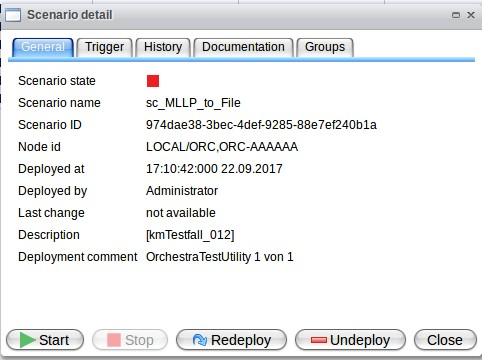
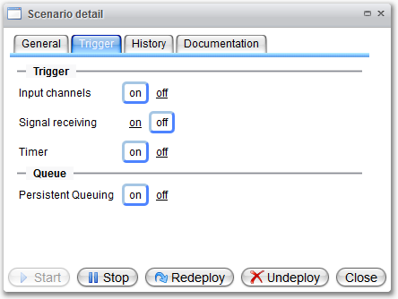

Scenario Details

Topic content
The scenario details contain a short overview over the scenario, a tab for controlling the scenario trigger as well as a tab for the history of redeployments and a quick view of the scenario documentation.
Overview
The scenario overview shows a short summary over important information about the status and the last changes on the particular scenario.

Trigger Management
The trigger management can be used for defining if a scenario should be ignored for certain triggering events (suspend/resume-procedure). By deactivation, the currently existing tasks will be processed and from then on all trigger of this type will be ignored. After reactivation, the initiated tasks are processed again.

|
The suspending can be used for "running idle" of scenarios/processes for maintenance work. For a suspension/resumption of triggers from all scenarios, there is a function in the scenario overview. |
The specification of persistent queuing decides whether a task should be stored persistent. If persistent queuing is deactivated, for example signals will be completely discarded, whereas they are only temporarily not processed and processed again on reactivation when the signal trigger is deactivated.
The deactivation of persistent queuing is only recommended if a scenario should be ignored completely by the system, but an undeployment is not desired. Reproducing the signals is not possible! |
If functions in the "Trigger" section are deactivated, the status symbol of the corresponding scenario changes.
Deployment History
The deployment history shows the course of the former versions of the scenario and offers the possibility to download the particular .psc-file.
Scenario Documentation
The short overview of the scenario documentation shows scenario-specific details from the process models, channels and environment entries. For a better display, the dialog window should be switched to full screen.
A download of the single documentation of the scenario is possible via the context menu of the scenario table.
Scenario Groups
Please see Scenario Grouping.
Scenario-overlapping Functions
Further options of the scenario view offer scenario-overlapping possibilities for viewing and downloading the documentation as well as the global suspension and resuming (view chapter Trigger Management for example for preparing maintenance work on the server).
If the process overview is showing "n/a" instead of a number, so it is necessary to recalculate the internal process information's from Orchestra.
This can be done for the Orchestra Runtime with the button "Process overview" and for the LTA with the button "Longtime archive".
Note: The user needs the roles "Recompute.Process.Overview" and/or "Recompute.LTA.Statistic"